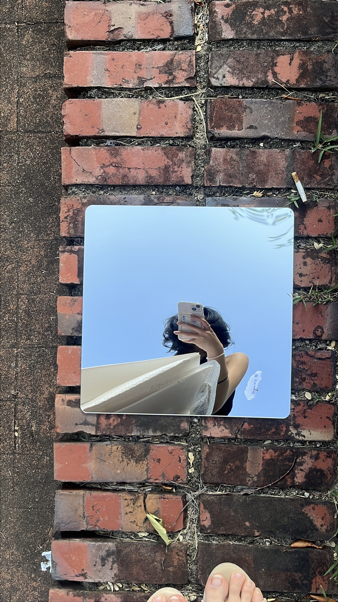

☁️☁️☁️☁️☁️☁️☁️☁️☁️☁️☁️☁️☁️☁️☁️☁️☁️☁️☁️☁️
🙋♀️
Become
a Sky
Sandwich
하늘과 하늘 사이에 끼이는 법
☁️☁️☁️☁️☁️☁️☁️☁️☁️☁️☁️☁️☁️☁️☁️☁️☁️☁️☁️☁️
01
☁️☁️☁️☁️☁️☁️☁️☁️☁️☁️☁️☁️☁️☁️☁️☁️☁️☁️☁️☁️
OBSERVATION
하늘은 늘 위에 있지만
아무도 올려다보지 않는다.
그냥 지나치느라, 위를 볼 일이 잘 없다.
☁️☁️☁️☁️☁️☁️☁️☁️☁️☁️☁️☁️☁️☁️☁️☁️☁️☁️☁️☁️
02
☁️☁️☁️☁️☁️☁️☁️☁️☁️☁️☁️☁️☁️☁️☁️☁️☁️☁️☁️☁️
?고개를 숙인 채로도
하늘을 볼 수 있을까?
☁️☁️☁️☁️☁️☁️☁️☁️☁️☁️☁️☁️☁️☁️☁️☁️☁️☁️☁️☁️
03
☁️☁️☁️☁️☁️☁️☁️☁️☁️☁️☁️☁️☁️☁️☁️☁️☁️☁️☁️☁️
THE IDEA
거울로 하늘을
바닥에 비췄다.
N25 뒤편, 잘 쓰이지 않던 자리에 접착식 거울 타일을 붙였다. 고개를 숙여도 하늘이 보이도록.
☁️☁️☁️☁️☁️☁️☁️☁️☁️☁️☁️☁️☁️☁️☁️☁️☁️☁️☁️☁️
04

☁️☁️☁️☁️☁️☁️☁️☁️☁️☁️☁️☁️☁️☁️☁️☁️☁️☁️☁️☁️
고개를 숙였더니, 하늘이 거기 있었다.
☁️☁️☁️☁️☁️☁️☁️☁️☁️☁️☁️☁️☁️☁️☁️☁️☁️☁️☁️☁️
05
☁️☁️☁️☁️☁️☁️☁️☁️☁️☁️☁️☁️☁️☁️☁️☁️☁️☁️☁️☁️
THE MOMENT
SKY
🧍
REFLECTED SKY
위에는 진짜 하늘, 아래엔 비친 하늘.
그 사이의 사람은 샌드위치.
☁️☁️☁️☁️☁️☁️☁️☁️☁️☁️☁️☁️☁️☁️☁️☁️☁️☁️☁️☁️
06

☁️☁️☁️☁️☁️☁️☁️☁️☁️☁️☁️☁️☁️☁️☁️☁️☁️☁️☁️☁️
거울 속엔 하늘과 내가 함께 비쳤다.
☁️☁️☁️☁️☁️☁️☁️☁️☁️☁️☁️☁️☁️☁️☁️☁️☁️☁️☁️☁️
07
☁️☁️☁️☁️☁️☁️☁️☁️☁️☁️☁️☁️☁️☁️☁️☁️☁️☁️☁️☁️
NOW ONLINE
☁️☁️☁️☁️☁️☁️☁️☁️
BECOME
A SKY
SANDWICH
A SKY
SANDWICH
🥪
☁️☁️☁️☁️☁️☁️☁️☁️
이젠 웹에서도
직접 샌드위치가 된다.
☁️☁️☁️☁️☁️☁️☁️☁️☁️☁️☁️☁️☁️☁️☁️☁️☁️☁️☁️☁️
08
☁️☁️☁️☁️☁️☁️☁️☁️☁️☁️☁️☁️☁️☁️☁️☁️☁️☁️☁️☁️
TAP TO BECOME
누를 때마다 한 단계씩.
🙋♀️→
👇→
👀→
😮→
🥪
구름이 위아래에서 모여들면, 그 사이에 끼인다.
☁️☁️☁️☁️☁️☁️☁️☁️☁️☁️☁️☁️☁️☁️☁️☁️☁️☁️☁️☁️
09